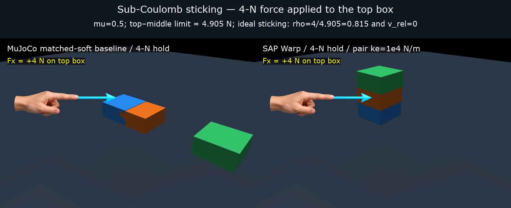

Protocol report · October 2026
Mechanism-aware
evaluation
Each completed task is reported as a complete evidence chain: physical setup, literal-default B=1 versus frozen B=5, then the bounded transfer evidence for that chosen setting.
1. How to read a task card
A card reports the literal compiled/default B=1 and the frozen B=5 selection for SAP Warp and MuJoCo Warp. “Accuracy” is shown only for tasks with preregistered discrete outcomes; bounce and toss instead report their continuous fidelity measure. The final subsection is not a tuning footnote: it states what the selected setting did, or did not, transfer to.
2. Result inventory
| Task | SAP Warp | MuJoCo Warp | Website status |
|---|---|---|---|
| Three-box push | historical 500/500 | historical 478/500 passed recorded state/contact gates | NaN classification corrected; capacity replay output awaiting retrieval |
| Simple pinch | complete | complete | full card |
| Three-plate stack | prior μ=0.8: 240/240; fresh rerun output awaiting retrieval | μ=0.8 rerun: 128/240 | ground friction aligned; fresh paired result pending retrieval |
| GAUGE ball bounce | complete | complete | full card |
| ContactNets cube toss | complete | complete | full card |
| Round socket | complete-negative transfer | complete-negative transfer | full card |
| GAUGE slope · MIT Push · cube-toss tail | telemetry audit pending | telemetry audit pending | not yet publishable |
| Pendulum · Newton cradle · Cassie · peg/EZGripper | incomplete or not comparable | incomplete or not comparable | not yet publishable |
3. Static friction
These tasks test whether contact models preserve or release a body at the expected frictional threshold. Primary evidence is discrete retain/release agreement plus a mechanism metric such as creep or preload.
3.1 Three-box push
1. Task setup
Three identical boxes start in a centred vertical stack. A horizontal force acts at the middle or top box COM after 0.6 s of settling, ramps for 0.4 s and holds for 0.65 s. Baseline: 1 kg per box, 20-mm half-width, dt=0.5 ms. Labels include retain, slip and tip; analytic slip and tipping thresholds define cases with a margin from the competing event. Classification uses the first event: contact-face displacement ≥1 mm or box tilt >10°. A non-finite state is invalid and never counts as correct.

| Parameter or metric | Definition |
|---|---|
| Physical sweep | box mass 0.5/1/2 kg; friction μ=0.3/0.5/0.7/0.9; box half-width 15/20/30 mm; middle/top loads; dt=0.25/0.5/1 ms. These are the declared 25 combinations, not a full Cartesian grid. |
| Valid and correct | finite state, no capacity overflow, pre-event pushed-interface contact duty ≥99%, and class matches the analytic label |
| Creep | slope of contact-face displacement over the final 0.4-s hold; the retain selection cell is reported separately from sliding cases |
2. B=1 → B=5 core evidence
The original selection uses two excluded top-box conditions at μ=0.3: force ratios 0.7 (retain) and 1.3 (slip), R=20 each. Mass, geometry, force command and dt are fixed across all five numerical candidates. B=1 values below come from that historical selection. Both B=1 and B=5 selection rows below are historical; the instrumented replay output has not yet been retrieved. B=1 was not evaluated on the full 25-cell held-out grid.
| Engine | B=1 on selection | Selected B=5 on selection | Representative mechanism metric |
|---|---|---|---|
| SAP Warp | literal native default: 0/40 | ke=1e5,tau=3ms,sigma=1e-4; 40/40 | retain-cell hold creep: 0.127 µm/s |
| MuJoCo Warp | literal native default: 20/40 | k=1e5,impratio=100,noslip=2; 40/40 | retain-cell hold creep: 40.9 µm/s |
SAP changes native contact stiffness/relaxation and friction regularisation. MuJoCo changes normal-contact stiffness, friction impedance and NoSlip correction. Each configuration is selected as a whole; these runs do not isolate a single parameter’s causal effect.
3. Generalizability
Both engines use the same strict-v4 manifest and R=20 perturbation scheme for 25 held-out conditions. SAP's existing finite result is retained. A replay of the original MuJoCo frozen B=5 setting with per-step capacity and finite-state checks was launched; its output is pending retrieval. Numerical parameters are unchanged. A separate selection replication changed candidate ordering, illustrating run-to-run variation, and is not used to retune this audit.
| Engine | Frozen setting | Held-out result |
|---|---|---|
| SAP Warp | ke=1e5,tau=3ms,sigma=1e-4 | 500/500 = 100.0% valid and correct |
| MuJoCo Warp | k=1e5,impratio=100,noslip=2 | 478/500 = 95.6% passed the recorded state/contact gates; capacity verification pending |
MuJoCo validity breakdown: 2 rollouts have non-finite state/diagnostic evidence; 20 other rollouts fail contact continuity. Among 498 rollouts with finite recorded diagnostics, 498 receive the expected class. The old “500/500 classifications correct” wording is withdrawn; non-finite cases are invalid and remain in the 500 denominator. Historical capacity telemetry is unavailable: the driver supplied a literal zero. The corrected per-step audit and NaN classifier pass all three GPU regression tests. The full frozen-setting replay was launched, but its result is pending retrieval after the remote connection timed out. No zero-overflow conclusion is made from the historical artifact.
| MuJoCo held-out condition | Passed recorded gates | Non-finite / invalid class | Minimum pre-event contact duty |
|---|---|---|---|
| middle box, μ=0.3, force / pushed-interface slip threshold=1.25 m=1 kg, half-width=20 mm, dt=0.5 ms | 17/20 | 0 | 0.976 |
| middle box, μ=0.7, force / pushed-interface slip threshold=0.5 m=1 kg, half-width=20 mm, dt=0.5 ms | 19/20 | 1 | 0.425 |
| top box, μ=0.3, force / pushed-interface slip threshold=1.5 m=1 kg, half-width=20 mm, dt=0.5 ms | 18/20 | 0 | 0.971 |
| top box, μ=0.3, force / pushed-interface slip threshold=1.5 m=2 kg, half-width=20 mm, dt=0.5 ms | 19/20 | 0 | 0.971 |
| top box, μ=0.3, force / pushed-interface slip threshold=1.25 m=1 kg, half-width=15 mm, dt=0.5 ms | 17/20 | 0 | 0.975 |
| top box, μ=0.3, force / pushed-interface slip threshold=1.25 m=1 kg, half-width=30 mm, dt=0.5 ms | 18/20 | 0 | 0.976 |
| top box, μ=0.3, force / pushed-interface slip threshold=1.25 m=1 kg, half-width=20 mm, dt=0.25 ms | 16/20 | 0 | 0.975 |
| top box, μ=0.3, force / pushed-interface slip threshold=1.25 m=1 kg, half-width=20 mm, dt=0.5 ms | 17/20 | 0 | 0.976 |
| top box, μ=0.3, force / pushed-interface slip threshold=0.5 m=1 kg, half-width=20 mm, dt=1 ms | 19/20 | 1 | 0 |
| top box, μ=0.3, force / pushed-interface slip threshold=1.25 m=1 kg, half-width=20 mm, dt=1 ms | 18/20 | 0 | 0.976 |
The conclusion covers this finite-horizon grid and declared five-candidate budget. Artifact: capacity-instrumented rerun and provenance.
3.2 Simple pinch
1. Task setup
Two opposed pads close on a block, establish preload, and lift it 60 mm. The mechanism is whether normal preload creates enough friction to retain the block. The reported frozen-setting scopes are not the same grid: SAP fixes compression at 0.2 mm and sweeps five masses (0.15, 0.20, 0.25, 0.30, 0.40 kg), R=20 each; MuJoCo Warp uses a separate 17-condition outcome-label grid that varies preload, mass, friction, and timestep, also R=20 each.
2. B=1 → B=5 core evidence
| Engine | B=1: setting and observed outcome | B=5: setting and observed outcome | What was changed |
|---|---|---|---|
| SAP Warp | literal contact default with the same 0.2-mm pad command: expected retain/release = 0 / 100; observed retain/release = 0 / 100. | ke=1e5, tau=3 ms: expected retain/release = 80 / 20; observed retain/release = 80 / 20. | The pad command, masses and friction coefficient are unchanged. B=5 selects SAP contact parameters from the declared four-candidate numerical budget. With the same 0.2-mm closure command, measured preload rises from 0.12 to 3.636 N/side. At 0.40 kg, r=0.741, so release is expected and observed in 20/20 trials. |
| MuJoCo Warp | literal default tc=4 ms, impratio=1, noslip=0: expected retain/release = 0 / 340; observed retain/release = 0 / 340. | tc=1 ms, impratio=50, noslip=0: expected retain/release = 220 / 120; observed retain/release = 220 / 120. | B=5 changes only the declared MuJoCo contact-solver candidates: a shorter contact time constant and higher impratio. noslip=0 remains unchanged: no post-contact NoSlip correction is used. |
3. Generalizability
| Engine / artifact | Final frozen B=5 setting | Variables actually tested (R=20 each) | Observed outcome |
|---|---|---|---|
| SAP Warp historical artifact | ke=1e5 N/m, tau=3 ms, compression 0.2 mm. | Mass only: 0.15, 0.20, 0.25, 0.30, 0.40 kg. Friction, compression, and timestep are fixed in this artifact. | 80/100 retain. 20/20 retain at 0.15–0.30 kg; 0/20 at 0.40 kg. This supports the stated mass range only, not a broader preload/friction/dt claim. |
| MuJoCo Warp historical artifact | solreffriction_tc=1 ms, impratio=50, noslip=0. | 17 conditions = 340 rollouts: compression/preload 0.2 mm (N4) and 0.3 mm (N6); at μ=0.4, masses 0.20/0.24/0.27/0.29/0.305/0.335/0.37/0.42 kg (N4) and 0.36/0.43/0.52 kg (N6); friction variants μ=0.3 at 0.20/0.28 kg and μ=0.5 at 0.34/0.45 kg; dt variants 0.25 and 1.0 ms at μ=0.4, 0.27 kg, 0.2-mm compression. | 220 expected-retain / 120 expected-release; observed retain / release = 220 / 120 (340/340 agreement). All tested preload, mass, friction, and dt label cases match their expected outcome. This is Warp's own frozen label grid, not the SAP five-mass sweep. |
New SAP common-matrix rerun — separate CPU result. The recovered original SAP runner reproduces the excluded selection point: 3.636335 N/side versus the historical 3.636346 N/side, 20/20 retain, no contact truncation. With its contact parameters frozen at ke=1e5, tau=3 ms, it then ran the same 17 mass/compression/friction/dt cells as MuJoCo (340 rollouts). It has 167/340 = 49.1% agreement: the measured-preload labels are 167 retain / 173 release, but the observed outcome is 340 retain / 0 release. The representative N4 boundary is 0.305 kg: SAP measures 3.636 N/side and r=0.972, hence release is the static label, yet all 20 rollouts retain over the finite 1.25-s lift/hold. At 0.3-mm compression SAP measures only 1.28–1.38 N/side, versus MuJoCo's approximately 5.99 N/side.
Why this does not replace the historical SAP row. The same recovered runner on this CPU disagrees with a historical edge anchor: at 0.40 kg the historical artifact has 0/20 retain, while this CPU rerun has 20/20 retain (measured r=0.741). Thus the new 17-cell artifact is a device-specific replication and exposes a CPU-versus-historical-runtime discrepancy; it is not yet a fair SAP–MuJoCo robustness comparison. A common-matrix rerun on the historical SAP GPU/runtime is required before comparing the two engines' robustness.
4. Sustained contact
This category probes long-lived support contacts: numerical overlap, load closure, settling, and whether a calibration setting survives thickness and timestep changes.
4.1 Three-plate stack
1. Task setup
Three circular plates start at rest on a plane, without a drop phase. Baseline: thickness h=4 mm, radius=100 mm, mass=1/3 kg per plate, dt=0.5 ms. Ground and all plates have sliding friction μ=0.8 in both engines. Each run lasts 2 s with R=20 independent shared xy/yaw perturbations. The former strict-v3 MuJoCo result used ground μ=1.0 and is superseded for cross-engine comparison.
Run completion: MuJoCo rerun is complete (128/240). SAP rows below are its prior μ=0.8 result (240/240); the new SAP rerun was launched, but its output is pending retrieval after the remote connection timed out. The fresh paired comparison is not yet certified complete.
| Parameter or gate | Definition |
|---|---|
| Physical sweep | thickness 0.5/4/5/20 mm; plate mass 1/6, 1/3, 2/3 kg; radius 75/100/125 mm; interplate x offset 0/0.5/1 mm; dt=0.25/0.5/1 ms |
| Pass | all gates simultaneously: correct plate order, sampled maximum centre-height overlap ≤5% of h, maximum interface load error ≤1%, and settled final 0.2 s (every plate |v|<0.01 m/s and |ω|<0.05 rad/s), finite state and no capacity truncation |
| Overlap gate at calibration | 5% × 4 mm = 0.20 mm; the allowed overlap scales with thickness |
| Normal load | interface expectations are 3mg, 2mg, mg from bottom to top; each load is averaged over the final 1 s |
2. B=1 → B=5 core evidence
Five numerical candidates per engine are selected only on the baseline 4-mm stack. Physical friction and dt remain fixed. B=1 and B=5 below use the same 20 selection perturbations.
| Engine | B=1 selection | Frozen B=5 selection | Selection mean maximum overlap / load error |
|---|---|---|---|
| SAP Warp | literal native default: 0/20 | ke=1e6,tau=3ms: 20/20 | overlap 2.49 → 0.00654 mm; maximum load error 1.82% → 0.00257% |
| MuJoCo Warp | literal native default: 0/20 | tc=8ms,dr=2,dmax=.99: 10/20 | overlap 0.419 → 0.185 mm; maximum load error 0.485% → 0.596% |
MuJoCo's five selection pass counts in this corrected run are 0, 2, 8, 10, 8 out of 20. A low best count means this declared candidate screen did not yield consistently passing calibration; it does not identify the cause or establish an engine-wide limit.
3. Generalizability
Coverage is matched: the selected setting is frozen for 12 declared conditions × R=20 per engine. The baseline calibration condition is excluded. The offset_0p5 and dt_0p5 entries repeat the same physical setting with different perturbations, so there are 11 distinct physical settings. Axis sweeps are not a full Cartesian grid.
| Engine | Frozen setting | Passed all gates |
|---|---|---|
| SAP Warp | ke=1e6,tau=3ms | 240/240 |
| MuJoCo Warp | tc=8ms,dr=2,dmax=.99 | 128/240 |
| Engine | Changed condition (others baseline) | Pass | Mean max overlap (mm) | Mean max load error (%) | Failed gates (out of 20) |
|---|---|---|---|---|---|
| SAP Warp | thickness 0.5 mm | 20/20 | 0.00655 | 0.01 | none |
| SAP Warp | thickness 5 mm | 20/20 | 0.00654 | 0.00333 | none |
| SAP Warp | thickness 20 mm | 20/20 | 0.00654 | 0.0162 | none |
| SAP Warp | mass 0.167 kg per plate | 20/20 | 0.00327 | 0.00908 | none |
| SAP Warp | mass 0.667 kg per plate | 20/20 | 0.0131 | 0.00342 | none |
| SAP Warp | radius 75 mm | 20/20 | 0.00654 | 0.0039 | none |
| SAP Warp | radius 125 mm | 20/20 | 0.00654 | 0.00381 | none |
| SAP Warp | interplate x offset 0.5 mm | 20/20 | 0.00654 | 0.021 | none |
| SAP Warp | interplate x offset 1 mm | 20/20 | 0.00654 | 0.023 | none |
| SAP Warp | dt=0.25 ms; x offset=0.5 mm | 20/20 | 0.00654 | 0.0334 | none |
| SAP Warp | dt=0.5 ms; x offset=0.5 mm | 20/20 | 0.00654 | 0.0215 | none |
| SAP Warp | dt=1 ms; x offset=0.5 mm | 20/20 | 0.00654 | 0.00404 | none |
| MuJoCo Warp | thickness 0.5 mm | 0/20 | 0.335 | 8.4 | order: 4; overlap: 20; load: 7; settling: 6 |
| MuJoCo Warp | thickness 5 mm | 9/20 | undefined | 5.73 | order: 1; overlap: 6; load: 8; settling: 5; finite: 1 |
| MuJoCo Warp | thickness 20 mm | 17/20 | undefined | 15 | order: 3; overlap: 3; load: 3; settling: 3; finite: 3 |
| MuJoCo Warp | mass 0.167 kg per plate | 8/20 | 0.273 | 1.06 | overlap: 12; load: 7; settling: 7 |
| MuJoCo Warp | mass 0.667 kg per plate | 8/20 | undefined | 5.89 | order: 1; overlap: 11; load: 9; settling: 11; finite: 1 |
| MuJoCo Warp | radius 75 mm | 10/20 | undefined | 8.23 | order: 2; overlap: 4; load: 5; settling: 10; finite: 2 |
| MuJoCo Warp | radius 125 mm | 7/20 | 0.344 | 1.22 | overlap: 13; load: 7; settling: 8 |
| MuJoCo Warp | interplate x offset 0.5 mm | 13/20 | 0.168 | 0.638 | overlap: 7; load: 5; settling: 4 |
| MuJoCo Warp | interplate x offset 1 mm | 18/20 | 0.0934 | 0.116 | overlap: 1; load: 1; settling: 1 |
| MuJoCo Warp | dt=0.25 ms; x offset=0.5 mm | 15/20 | 0.162 | 0.72 | overlap: 5; load: 3; settling: 2 |
| MuJoCo Warp | dt=0.5 ms; x offset=0.5 mm | 13/20 | 0.146 | 0.517 | overlap: 4; load: 3; settling: 5 |
| MuJoCo Warp | dt=1 ms; x offset=0.5 mm | 10/20 | 0.169 | 0.577 | overlap: 10; load: 5; settling: 5 |
Gate-failure counts may overlap. “undefined” means the aggregate contains a non-finite value. The overlap metric is based on sampled centre heights, not an all-step geometric penetration witness. Full per-rollout data, preflight and provenance: friction-aligned rerun.
5. Dynamic impact
Impact tasks report event and trajectory fidelity rather than forcing a binary accuracy: valid rebound/apex recovery for bounce, and held-out trajectory error for toss.
5.1 GAUGE ball bounce
1. Task setup
A released GAUGE object impacts a board. A valid rebound apex is a local maximum of the ball-centre height only after first contact has ended, the ball has separated into free flight, and its height is above board + radius. For each trajectory, pair the first up-to-three simulated and reference apexes and compute Eapex = mean(|hsim - href| / max(|href|, 1e-6 m)). This is continuous relative apex-height/energy-decay error, not a classification: no preregistered threshold defines a correct/incorrect bounce. If either trace has no valid apex, Eapex is undefined (not zero).
2. B=1 → B=5 core evidence
| Engine | B=1: setting and fidelity | B=5: setting, change, and fidelity | Mechanism metric and failure |
|---|---|---|---|
| SAP Warp | literal native default (ke/tau unset); continuous task: binary accuracy N/A; default stays in contact / has no separating rebound, so Eapex is undefined | ke=1e4, tau=1 ms; change versus B=1: set explicit normal stiffness and contact time constant. Selected on odd trials: composite loss 0.1709; frozen held-out composite loss 0.1704 | B=1's dominant failure is absence of a valid rebound apex, not “zero restitution”. B=5 is finite and untruncated. |
| MuJoCo Warp | literal Euler default; continuous task: binary accuracy N/A; default stays in contact / has no separating rebound, so Eapex is undefined | k=30000, b=30, implicitfast; change versus B=1: replace literal Euler/default contact with direct normal stiffness, damping, and implicitfast. Selected on odd trials: composite loss 0.0897; frozen held-out composite loss 0.0894 | B=1 fails event validity. B=5 has finite metrics and no overflow worlds. |
3. Generalizability
What was frozen and what was varied. Both engines freeze their selected B=5 contact settings. The held-out set varies only the released GAUGE trajectory/initial position: the 11 even-numbered trials (2, 4, …, 22), each with R=20 local perturbation rollouts, for 220 rollouts per engine. It does not sweep mass, friction, dt, impact angle/speed, or geometry; this is held-out trajectory transfer, not a full impact-parameter robustness grid.
| Engine | Final frozen B=5 setting; change from B=1 | Held-out coverage actually evaluated | Pooled held-out result: what “loss” means |
|---|---|---|---|
| SAP Warp | ke=1e4, tau=1 ms. B=1 leaves ke/tau unset; B=5 sets both explicitly. | 11 disjoint GAUGE release trajectories (even IDs) × R=20 = 220. Only released initial trajectory/position changes; B=5 settings and the remaining physical setup are fixed. | 0.1704 composite loss = mean trajectory RMSE 0.1259 m + 0.05 × mean Eapex=0.8903, pooled over all 220 rollouts. All are finite with no contact truncation. |
| MuJoCo Warp | k=30000, b=30, implicitfast. B=1 is literal Euler/default contact; B=5 adds direct normal stiffness/damping and changes integrator. | Same 11 held-out GAUGE release trajectories × R=20 = 220; no frozen mass, friction, dt, impact-angle/speed, or geometry sweep. | 0.0894 composite loss = mean trajectory RMSE 0.0786 m + 0.05 × mean Eapex=0.2162, pooled over all 220 rollouts. Zero overflow worlds. |
Interpretation boundary. B=1 is unscorable on the apex term because it has no separating rebound apex; the finite B=5 values show event recovery plus fidelity on this held-out trajectory split. They do not establish robustness to untested impact parameters.
5.2 ContactNets cube toss
1. Task setup
Released cube states are replayed into an impact trajectory and compared with held-out reference trajectories. This is also continuous: the primary outcome is trajectory fidelity rather than a binary accuracy. SAP's audited held-out set contains 32 samples with R=20.
2. B=1 → B=5 core evidence
| Engine | B=1: setting and fidelity | B=5: setting, change, and fidelity | Mechanism metric and failure |
|---|---|---|---|
| SAP Warp | literal native default; no binary accuracy defined, selection loss 0.1147 | ke=1e4, tau=0; change versus B=1: set explicit contact stiffness and zero time constant. Selection loss 0.1147 → 0.1052; frozen held-out composite loss 0.1193 | Held-out position RMSE 39.9 mm; final orientation error 1.59 rad; finite with no truncation. |
| MuJoCo Warp | literal Euler default; no binary accuracy defined, held-out loss 0.1227 | B=5 selects the same literal default — no parameter changes; selection loss is 0.0944 and frozen held-out composite loss is 0.1227 | The important usability result is negative: extra candidates did not improve selection, so B=1 is frozen rather than claiming a tuning gain. |
3. Generalizability
What was frozen and what was varied. The frozen B=5 contact setting is evaluated on 32 alternating held-out ContactNets trajectories (IDs 1, 3, …, 63), each with R=20 local perturbation rollouts: 640 rollouts per engine. Across those samples, the released initial position, orientation, linear velocity, angular velocity, and reference trajectory differ. No post-selection sweep changes mass, friction, dt, cube geometry, or contact material; this is a held-out state/trajectory split only.
| Engine | Final frozen B=5 setting; change from B=1 | Held-out coverage actually evaluated | Pooled held-out result: what “loss” means |
|---|---|---|---|
| SAP Warp | ke=1e4, tau=0. B=1 has these contact values unset; B=5 makes the selected pair explicit. | 32 disjoint released trajectories × R=20 = 640. Initial pose and linear/angular velocity come from each held-out reference; mass, friction, dt, and geometry remain fixed. | 0.1193 composite loss = mean position RMSE 0.03993 m + 0.05 × mean final-orientation error 1.587 rad, pooled over 640 rollouts. Position DTW 0.03134 m; finite/no truncation. |
| MuJoCo Warp | Literal Euler default. B=5 deliberately equals B=1 because every added direct-contact candidate scored worse on selection; there is no parameter change to attribute. | Same 32 held-out trajectories × R=20 = 640; varying released state/trajectory only, not mass, friction, dt, geometry, or material. | 0.1227 composite loss = mean position RMSE 0.05323 m + 0.05 × mean final-orientation error 1.389 rad, pooled over 640 rollouts. Position DTW 0.03939 m. |
Interpretation boundary. The frozen result is a state/trajectory-transfer result. It is not yet the post-B=5 parameter/setup sweep required by the task-runner SOP, so no mass-, friction-, dt-, material-, or geometry-robustness claim is made.
6. Composite insertion
Insertion couples clearance, contact geometry, friction, compliance, and actuation. A rollout is credible only when the peg enters without excessive peak/final penetration, radial escape, or contact-capacity truncation.
6.1 Round socket (peg-in-hole)
1. Task setup
An 80-g cylindrical peg, initially tilted 1°, drops for 2 s into a shared 32-piece CoACD round socket. Selection is 2-mm radial clearance with 1-mm lateral offset; R=20 perturbations. Credibility requires entry, radial error within clearance, no overflow, and both peak and final penetration at most 10% of clearance.
Credible selection insertion. A rollout counts as credible only if all gates pass: it reaches the insertion-depth / coarse-entry gate (z ≤ 45 mm, radial error ≤ 3 mm), final radial error is within its clearance r ≤ c, it does not escape, there is no contact-capacity overflow/truncation, and both peak and final penetration are ≤ 0.1c. Thus 19/20 means 19 of the 20 independent lateral-perturbation rollouts pass every gate; it is a success count, not a clearance value.
2. B=1 → B=5 core evidence
| Engine | B=1: setting and accuracy | B=5: setting, change, and accuracy | Mechanism metric and failure |
|---|---|---|---|
| SAP Warp | literal native default at dt=.5 ms; 0/20. Mean peak penetration is .650c; mean final radial error is 17.35 mm. | pair k=1e5 N/m, tau=3 ms, rigid_gap=.1 mm, dt=.25 ms; 18/20. Change: explicit pair stiffness/relaxation/gap and smaller dt. | The B=5 contact setting changes the nominal mechanism: mean peak penetration falls .650c → .0458c and mean final radial error 17.35 → .477 mm, yielding 18 credible rollouts; no contact truncation occurs. |
| MuJoCo Warp | literal default at dt=.5 ms; 0/20. Mean peak penetration is 4.03c; mean final radial error is .462 mm, so the failure is the penetration gate rather than centering. | solref=2 ms 2, solimp d=.95, implicitfast; 11/20. Change: 2-ms contact time constant, damping ratio 2, contact impedance d=.95, and implicitfast. | The changed contact response reduces mean peak penetration 4.03c → .0942c while final radial error stays near .5 mm; 11/20 meet every gate, while 9 still exceed at least one (principally peak-penetration) gate. No overflow worlds. |
3. Generalizability
Frozen matrix and fixed setup. The selection cell (c=2 mm, offset=1 mm) is excluded. Both engines keep the selected B=5 contact setting, 1° initial tilt, 2-s runtime, shared 32-piece CoACD geometry, mass, and friction fixed. The only swept task axes are radial clearance and initial lateral offset; each cell has R=20 independent ±.05 mm lateral perturbations. dt is fixed within engine at SAP .25 ms and MuJoCo Warp .5 ms, so this matrix does not test timestep, tilt, speed/force, mass, friction, or geometry transfer.
| Held-out condition: clearance c / offset | SAP Warp frozen B=5 | MuJoCo Warp frozen B=5 |
|---|---|---|
2.0 mm / 0 mm (centered) | 19/20 credible successes (95%). | 0/20 credible successes; mean peak penetration .325c. |
1.5 mm / 0 mm; 1.5 mm / 1 mm | 0/20 in both cells. | 0/20 in both cells. |
1.0 mm / 0 mm; 1.0 mm / 1 mm | 0/20 in both cells. | 0/20 in both cells. |
.5 mm / 0 mm; .5 mm / 1 mm | 0/20 in both cells. | 0/20 in both cells. |
.25 mm / 0 mm; .25 mm / 1 mm | 0/20 in both cells. | 0/20 in both cells. |
Result and scope. SAP succeeds only in 19 of 20 centered 2-mm-clearance rollouts; MuJoCo Warp has zero credible successes in all nine held-out cells. This is a complete-negative clearance/offset transfer result, not evidence about the fixed axes listed above.
7. Artifacts and protocol
- Website result-summary protocol ↗
- three-box SAP artifact ↗ · static-friction MuJoCo Warp artifact ↗
- three-plate SAP artifact ↗ · three-plate MuJoCo Warp artifact ↗
- bounce SAP artifact ↗ · bounce MuJoCo Warp artifact ↗
- cube-toss SAP artifact ↗ · cube-toss MuJoCo Warp artifact ↗
- round-socket SAP artifact ↗ · round-socket MuJoCo Warp artifact ↗
8. Dynamic friction — registered results
Dynamic-friction results are reported by observable. A missing real force trace prevents a force-law comparison; it does not erase a registered real-trajectory result. The two tasks below therefore retain trajectory, endpoint, setting, and contact-continuity evidence, while making no cross-engine ranking from unavailable force data.
8.1 GAUGE Slope Slider — released trajectory
The public GAUGE records provide object trajectories for a wood run (task 1) and a plastic run (task 2), but not synchronized contact-force measurements. Both engines therefore have reportable trajectory results under their frozen settings; ρ / friction-law fidelity is deliberately not reported as a real-data comparison.
| Engine / frozen setting | Wood, task 1 | Plastic, task 2 | What this supports |
|---|---|---|---|
SAP Warp B=5 ↗ke=1e4, tau=1 ms; R=20 | RMSE 0.439 mm; normalized RMSE 0.744 | RMSE 12.412 mm; normalized RMSE 0.690 | Frozen held-out trajectory agreement for the two released reference trajectories. |
MuJoCo Warp B=5 contact audit ↗solref=4 ms, dampratio=.5 | R=19; RMSE 0.803 mm; normalized RMSE 1.361; endpoint error 1.253 mm; support-contact duty .895 | R=20; RMSE 20.895 mm; normalized RMSE .835; endpoint error 44.215 mm; support-contact duty .218 | Trajectory and contact-continuity audit. The plastic trace loses continuous support, so it is not force-law evidence. |
Reportable conclusion: these are real-trajectory reconstructions with the stated errors and endpoint behavior. They are not a validated comparison of a shared dynamic-friction coefficient or force utilization, because that reference measurement was never released.
8.2 MIT Push — real trial reconstruction
For MIT Push, the audited SAP Warp artifact reconstructs a held-out plywood/rectangular-object trial from the recorded motion and includes synchronized, reference-active contact checks. This is stronger than trajectory-only evidence, but remains one scoped trial reconstruction—not a universal engine ranking.
| Frozen setting and trial | Pose / trajectory (R=20) | Contact-health audit | Scope of conclusion |
|---|---|---|---|
SAP Warp B=5 ↗ke=1e5, tau=3 msHeld-out plywood / rect1 trial | final translation error 0.320 mm final orientation error .0745° trajectory RMSE .275 mm | pusher duty during reference-active windows .994; table duty 1.000; table-normal closure error .382%; all finite; 0 truncated contacts | Report the listed pose, path, and contact-health reconstruction metrics for this real held-out trial. Windowed wrench/twist diagnostics are recorded (Ew=.402, Et=.0227), but no claim is made that they establish a general friction law. |
Why these belong here: neither task needs every possible metric to be useful. Slope Slider contributes trajectory evidence; MIT Push contributes trajectory, final-pose, and audited contact-health evidence. Only the missing or non-comparable force-specific claims are withheld.
8.3 Dynamic-friction internal force health
These numbers inspect the simulator's own contact outputs. They do not assert agreement with an unmeasured physical force trace, but they do show whether the saved aggregate outputs are finite, have a sensible mean scale, and use the declared friction capacity.
| MuJoCo Warp B=5 contact audit | Finite rollout means | Normal force (per-rollout mean) | Friction utilization ρ | Numerical-health reading |
|---|---|---|---|---|
| GAUGE wood, task 1 (R=19) | 19/19 finite | overall mean 0.816 N; rollout range .450–1.000 N | mean .667; rollout range .629–.837 | Finite, moderate force and utilization; support-contact duty is .895. |
| GAUGE plastic, task 2 (R=20) | 20/20 finite | overall mean 1.368 N; rollout range .324–3.743 N | mean .998; rollout range .929–1.000 | Utilization is near the friction limit, not near zero. The issue is intermittent support: duty is only .218. |
The audit saves aggregate and per-rollout means, not an instantaneous force maximum. It rules out non-finite output and gross mean-scale blow-up, but does not certify the absence of a sub-frame force spike. The frozen SAP slope artifact preserved trajectory and contact-candidate duty, but not matching force/ρ telemetry; therefore an SAP-versus-MuJoCo force-gap number would be invented and is not shown. A matching SAP force-trace replay is the required next measurement for that comparison.
9. Audited exclusions and bounded results
Cube-toss resting tail — SAP force aggregate rejected
An offline audit of the saved SAP tail artifact finds that all 640 worlds per configuration are finite, settled, and have contact duty 1.0, but the normal-force aggregate is not internally consistent. For the native default, the per-world median / p95 normal-load closure error is 12.83% / 97.46%; for ke=1e4, tau=0, it is 2.02% / 97.37%. Some settled worlds report approximately 3.6 N while others report 0.08–0.15 N. Therefore settled-tail drift remains reportable, but SAP normal-load, CV, and force-balance claims are excluded pending a new manifold-level force-trace run. Audit ↗
Data-limited composite tasks
DENSE public HDF5 provides tactile arrays/timestamps but no registered gripper/object pose, command, or pad geometry; GLIDE provides robot state/action and video but no object poses, CAD, calibration, or force; public Cassie trajectories end at about 50 ms. These are input boundaries, not missing result parsing. The DENSE raw SAP import is also rejected because its tendon/equality/actuator semantics are not preserved. Consequently, the guarded GLIDE carry and 50-ms reduced-tree Cassie replay remain bounded tasks rather than being relabelled as full physical replays. Readiness audit ↗
9.1 Cube-Toss resting tail — corrected SAP force trace
This GPU rerun supersedes the aggregate-only audit above. It uses the frozen SAP B=5 setting ke=1e4, tau=0, 32 held-out released states, and R=20 perturbations each: 640/640 worlds are finite and settled, cube–ground contact duty is 1.000, and there are 0 truncated contacts. The new trace sums only active cube–ground contact impulses in the cube's world frame and aligns each resultant with the state that was just solved.
| Tail-motion result | Corrected support-manifold result | What can be reported |
|---|---|---|
| Mean drift 3.48 µm/s; linear RMS speed .155 mm/s; angular RMS speed .0020 rad/s. | When SAP emits a support pulse, normal resultant is 3.6297 N (expected m g=3.6297 N; 1st–99th percentile 3.6294–3.6300 N). Pulses occur on 67.00% of settled steps; the remaining 33.00% have zero resultant despite active contacts. Hence time-mean support is 2.4331 N, a 32.97% load-closure error. Tail force p99 / max: 3.6298 / 3.6422 N. | Report settling, drift, finite state, continuous support-contact presence, and bounded pulse scale. Do not report a SAP time-averaged normal-load or force-balance comparison for this frozen setting: the corrected trace shows intermittent impulse support, rather than a load-balanced stepwise resultant. |